Dessins reçus dans le cadre du concours anti-DRMi :
acp - Creative Commons BY-SA (http://creativecommons.org/licenses/by-sa/2.5/)
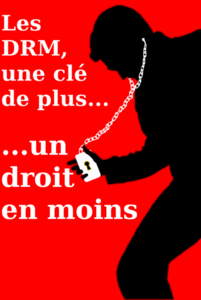
Milland Luc - Licence Art Libre
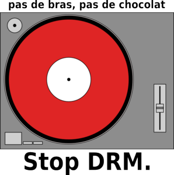
N-mi - Licence Art libre
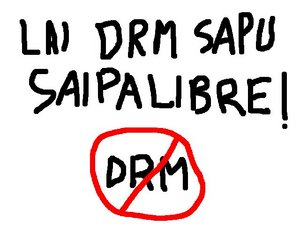
Dailly Sébastien - Licence Art Libre ou GNU FDL
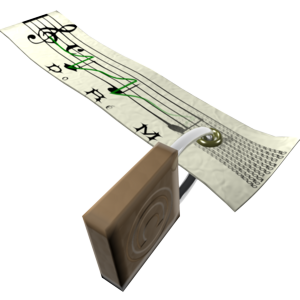
nv AT altern.org - Licence CC By SA
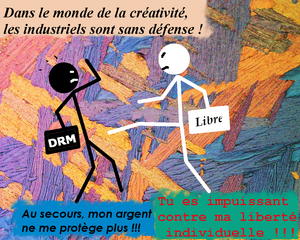
Armel (melinux AT free.fr) - Licence Art Libre
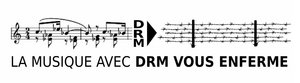
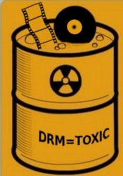
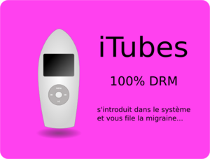
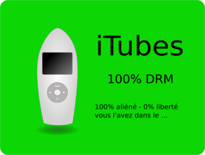
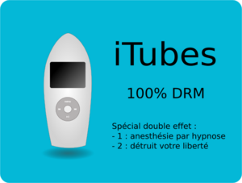
Jordan Augé (jordan.auge AT free.fr) - Licence Art Libre ou Creative Commons BY SA
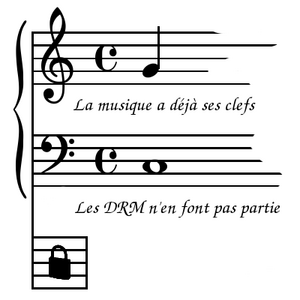
Cédric Joly (cedricjoly.gnu AT gmail.com) - Licence Art Libre
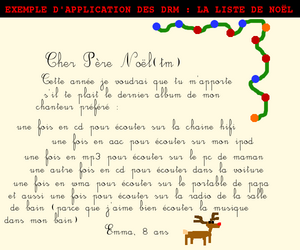
L'auteur souhaite rester anonyme. - Domaine public
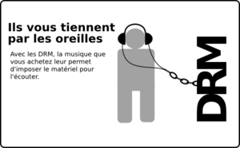
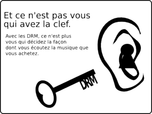
nojhan - Licences CC-BY-SA-fr, Art Libre ou GNU FDL
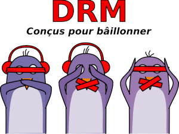
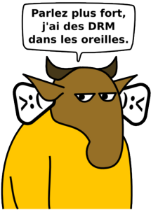
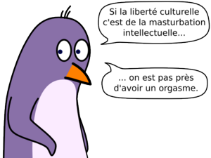
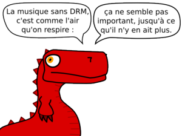
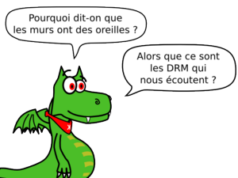
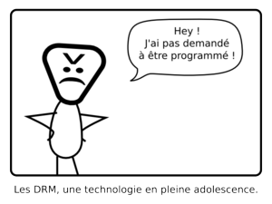
Mathieu Stumpf (psychoslave AT gmail.com) - Licences Art Libre ou GNU FDL
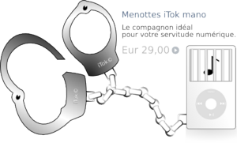
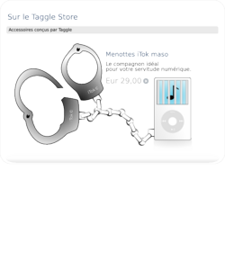
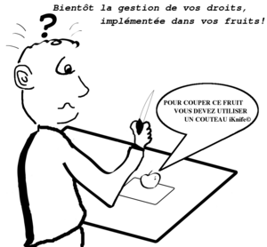
Clement Quaquin (clement.quaquin AT free.fr) - Licence Art Libre
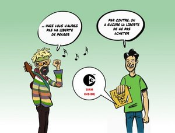
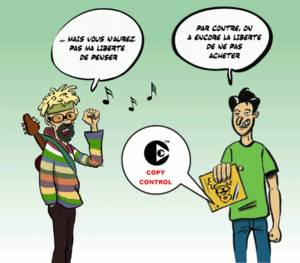
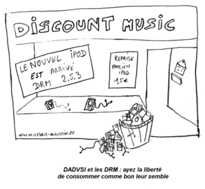
goeb - Licence CC By-SA

parsimony - Licence CC By-SA
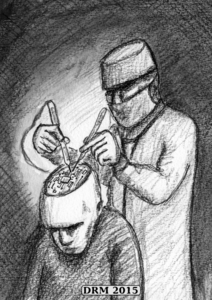
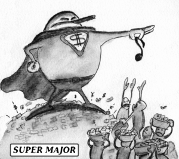